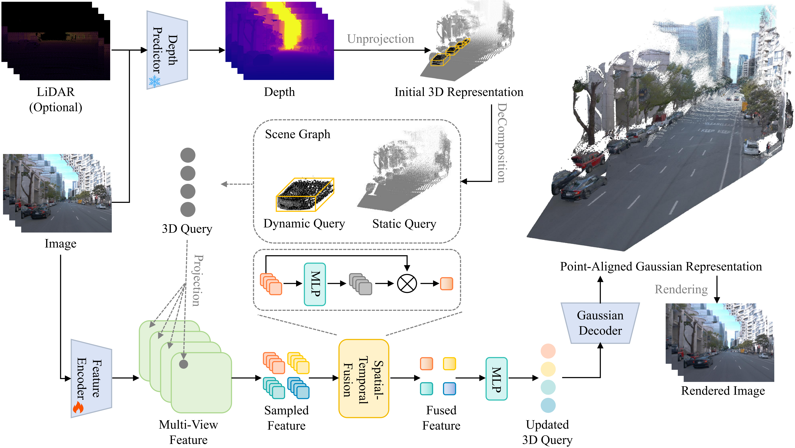

High-fidelity reconstruction of driving scenes is crucial for autonomous driving. While recent feedforward 3D Gaussian Splatting (3DGS) methods enable fast reconstruction, their per-pixel Gaussian prediction paradigm often suffers from multi-view inconsistency and layering artifacts. Moreover, existing methods often model dynamic instances via dense flow prediction, which lacks explicit cross-view correspondence and instance-level consistency. In this paper, we propose PointForward, a feedforward driving reconstruction framework through point-aligned representations. Unlike pixel-aligned methods, we initialize sparse 3D queries in world space and aggregate multi-view image information via spatial-temporal fusion onto these queries, enforcing explicit cross-view consistency in a single feedforward pass. To handle scene dynamics, we introduce scene graphs that explicitly organize moving instances during reconstruction. By leveraging 3D bounding boxes, our method enables instance-level motion propagation and temporally consistent dynamic representations. Extensive experiments demonstrate that PointForward achieves state-of-the-art performance on large-scale driving benchmarks. The code will be available upon the publication of the paper.

We initialize sparse 3D queries in world space and project them onto multi-view image planes to aggregate features and geometric cues. A spatial-temporal fusion module produces coherent point-aligned representations, while scene-graph-based dynamic modeling ensures instance-level motion consistency for rendering dynamic driving scenes.